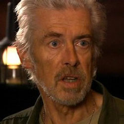

| Home | The Doctors | The Companions | The Villains |
|
|||
General Cob Cobb is a General for the human faction on the planet Messeline. It appears he grew deranged over the week-long period in which the war took place, becoming blood-thirsty and wishing for the genocide of the Hath. He asks the Tenth Doctor to join him in war against the Hath, in a bid to claim the Source for which they are both searching, but subsequently locks the Doctor and his companions up when the Doctor refuses. He later shoots Jenny, the Doctor's daughter, after the Doctor releases the Source; the Doctor is clearly tempted to shoot Cobb himself, but informs Cobb that he would never resort to Cobb's methods, going on to ask the humans and Hath to make that philosophy the foundation of their new society. |